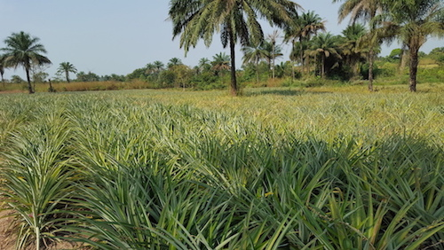
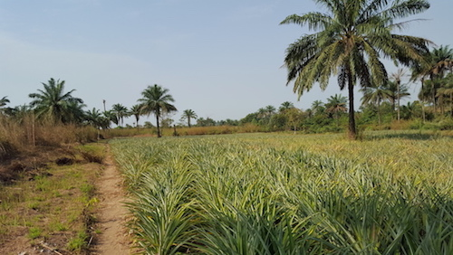
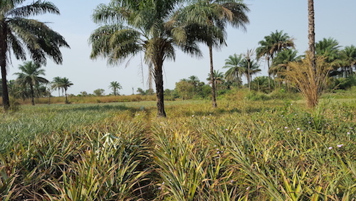
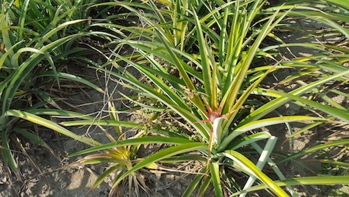

Depuis quelques années les anciens fermiers du village du village sont tous devenus des cultivateurs d'ananas qui est presque le poumon de l'economie du village.
Le village produit presque 40% de la quantité d'ananas de la region. La culture est pourtant semi-traditionnelle mais cela ne les empeche pas de produire en grande quantité.
Pour reussir cette production en grande quantité, les villageois se regroupent en groupement et contribue pour louer les pompes afin d'arroger leurs champs.
   